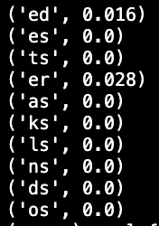

I suspect most people solved this with a wordlist based bruteforced approach. Writeups demonstrating this can be found here and here.
Instead of pulling from a wordlist, I extracted as much information as I could from the encoding function and did some guessing to figure out the rest.
In hindsight, my method was much more expensive (both for the computer and for my brain), but it was at least an interesting challenge.
After the user inputs a five letter word, this bit of code spits out some feedback.
For a moment, pretend that instead of five letter words, this program delt with strings consisting of a single character. How might we reverse this function in that case?
The attacker submits the string 'a'.
alph() is a function that returns a character's 0-indexed place in the alphabet. alph('a') = 0, alph('b') = 1, etc.
And just like that, we've got a way to crack the one character variant of this problem.
Keep in mind that we used one guess 'a' to obtain this information.
I demonstrated above that if the response from the first round of calculations is known, you can solve for the first character.
So our goal should be to solve for this result (responsea) as well as the final character of the secret (secret[1]).
The attacker submits the string 'aa'.
Let us examine the calculations for when x = 1 (the second round) and see what we find.

We seem to be at a dead-end here with two unknowns, responsea and secret[1].
Time to submit another guess. This time we'll use 'ab'.
We can combine these results to solve for responsea.
Now that we know responsea, our next step is to repeat the one character attack.
Of course, there's no need to submit another guess. We can just use the following formula to compute the first character.
We also now have enough information to find secret[1]. Notice that now, the final lines of our calculations for our guesses 'aa' and 'ab' now contain only a single unknown, secret[1]
There are only 26 possible values of secret[1], so it is easy to check each one and see which satisfies those equations (there will always be exaclty one solution).
Now we've recovered secret[0] and secret[1], and that's the full string! This time it took us two guesses.
Our one letter attack took one guess, our two letter attack took two guesses, and our three letter attack took four guesses.
Indeed, we can continue this cycle of coming up with attacks by repeating our old ones, but the number of guesses will grow exponentially.
Continuing down this road, this style of attack on an n-length word will require 2n guesses.
This challenge only allows us to have 6 guesses, and only 5 of those can be used to gather information (we need to reserve a guess for "submitting" the final word).
So we would need 25 = 32 guesses to reliably determine the word (plus one for submission), which is unfortunately far too many.
This means our five letter attack is going to require some luck.
Well my five letter attack didn't work out, but I had a perfectly good three letter attack.
Lets not waste it, we can presume to know the last two characters already and make use of our attack.
The three character attack requires us to know the response we would recieve for the strings 'aaa', 'aab', 'aba', and 'abb'.
However, in the actual problem, the oracle will only accept responses that are exactly five characters in length.
If you'll look at the encoding code again, you may see there is a way to form our guesses so we can recover this information easily.
As long as (a-b) evaluates to 1, then the response will always be equal to whatever the response was on the previous iteration.
Lets say we want to assume the ending 'xx'.
We can submit the guess 'aaayy', and the response we recieve will be exactly what the three letter version of the oracle would have given us for input 'aaa'.
To get this effect, you can take each letter of your assumed ending and instead guess the next letter in the alphabet.
(Yes, this means we can't assume that the word has a z in the final two letters, but this really doesn't matter as you'll see in a moment.)
Assuming that the word truly ends in 'xx' is a pretty tough bet. We can definitely pick a more common word ending.
Here are the most common two character word endings from the list of accepted wordle words.
If I knew they were using this wordlist for the challenge, then I would just pick "es" and move on, but I wanted to be sure as I knew my solution would take a LONG time to run.
So I went the extra step and queried the actual oracle over and over again, recording how often each of these 10 word endings were used in practice.
I won't get into the details, but checking for a two character word ending was a much easier problem to solve than determining a five character word.
This shows the probability of each ending appearing based on a sample of 250 oracle-generated words.
Based on this info, I decided to assume ending "er" (which means I used "fs" at the end of my guesses).
This attack will ONLY work if the secret word ends in "er".
Additionally, a few hours into the CTF the admins implemented an anti-brute forcing measure: to recieve the flag, you had to correctly guess three words in a row.
This means I had to wait for the oracle to just happen to feed me three words in a row that each ended with "er".
Luckily, waiting is easy, and eventually I got the flag :)
The flag contains a valuable message. Next time, I will consider just guessing.